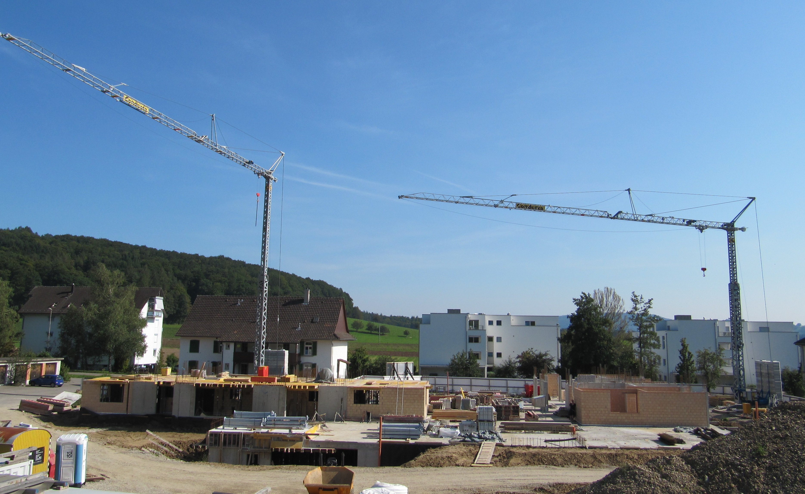
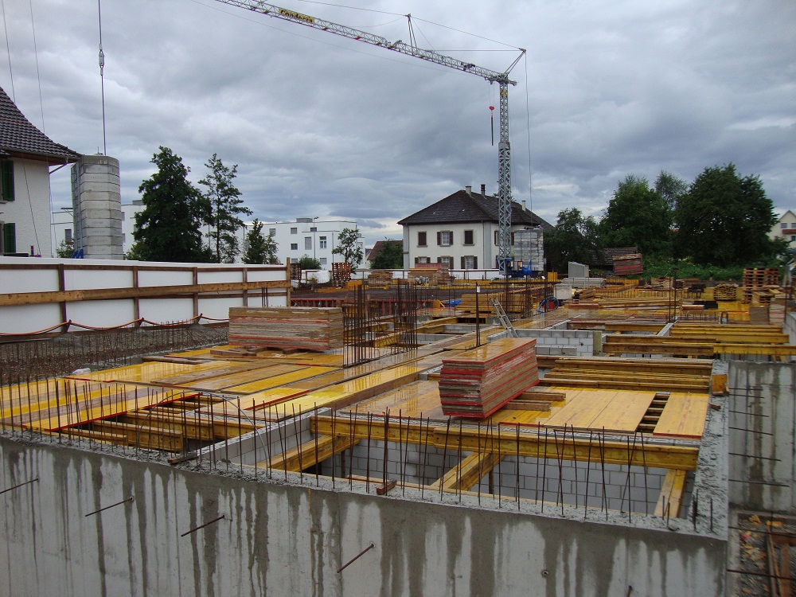

Der Verputz wurde soeben aufgetragen. Bald können wir die Gerüste abnehmen.
Neuigkeiten
Solarzellen & Fenster
Auf den Dächern des Ziegeleiwäg 1 und 3 werden Solarzellen montiert (Stand März).


Inzwischen sind auch schon die ersten Fenster eingebaut (Stand April).

Gestaltungsplan angenommen
An der Gemeindeversammlung vom 10. Dezember hat Rafz den Gestaltungsplan Ziegeleigarten mit grosser Mehrheit angenommen. Damit ist der Weg frei für zukünftige Etappen, nämlich weiteren Mehrfamilienhäusern für jugend- und singlebetontes, gefolgt von Einfamilienhäusern für Familien im oberen Bereich.
Wir haben nun Winterpause bis im Januar und wünschen allen schöne Festtage!
Erstes Dach

Ziegeleiwäg 1 ist nun überdacht. Als nächstes ist der Ziegeleiwäg 3 dran und danach kommen die Solarzellen.
Aussicht nach Norden

Die Sicht nach Norden aus dem Dachgeschoss.
Baufortschritt: Dachgeschoss

Inzwischen sind wir bereis beim Dachgeschoss. Bis zur Winterpause wird noch das Dach inkl. Solarzellen montiert.
Neues Farbkonzept

Was sieht besser aus? Weiss oder hellgrün? Wir haben uns für das elegantere Weiss entschieden.

Baufortschritt: Erdgeschoss
Inzwischen stehen bereits die Wände des Erdgeschosses. 

Die Backsteine stammen aus der nahe gelegenen Ziegelei und bestehen aus Lehm, der einen knappen Kilometer weiter oben am Hügel abgebaut wurde. Die Häuser bestehen somit zu einem grossen Teil aus der gleichen Erde, auf der sie auch stehen.
Zufahrtsstrasse soll Ziegeleiwäg heissen
Die Zufahrtsstrasse zum Ziegeleigarten hat bisher noch keinen Namen. Die Gemeinde Rafz hat unseren Vorschlag von „Ziegeleiwäg“ aufgenommen und voraussichtlich wird dies nun bald der offizielle Name der Zufahrtsstrasse sein. Damit ist der Weg frei zum nächsten Schritt, nämlich der Nummerierung der Häuser entlang des Ziegeleiwägs. „Ziegeleiwäg 1“ klingt nämlich einfach schöner als „Landstrasse 67c“.
Baufortschritt: Untergeschoss
Das Untergeschoss ist bereits erstellt. Es umfasst 30 Garagenplätze und die Kellerräume für die beiden Wohnhäuser. Jede Wohnung hat ihren eigenen Abstellraum und die Wohnungen sind direkt von der Tiefgarage aus durch das Treppenhaus und den Lift zugänglich.

